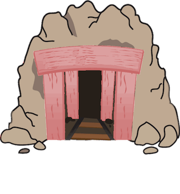
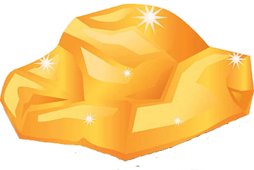
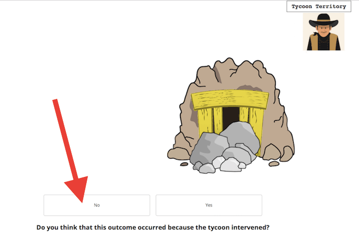
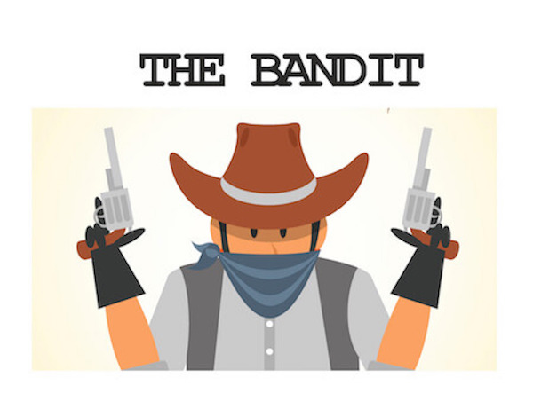
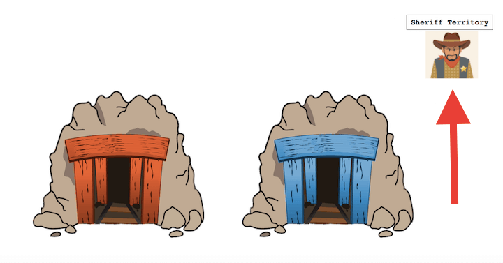
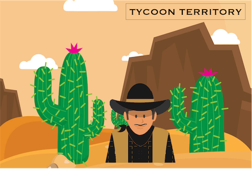
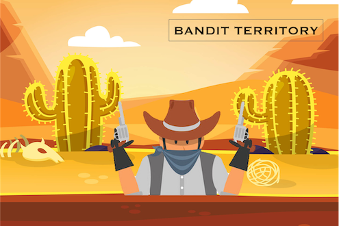
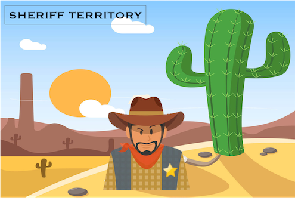

<!DOCTYPE html>
<html>
  <head>
    <title>Wild West Game</title>
    <script src="jspsych-6.3.1/jspsych.js"></script>
    <script src="jspsych-6.3.1/plugins/jspsych-instructions.js"></script>
    <script src="jspsych-6.3.1/plugins/jspsych-survey-multi-choice.js"></script>
    <script src="jspsych-6.3.1/plugins/jspsych-survey-text.js"></script>
    <script src="jspsych-6.3.1/plugins/jspsych-html-button-response.js"></script>
    <script src="jspsych-6.3.1/plugins/jspsych-html-button-response-hd.js"></script>
    <script src="jspsych-6.3.1/plugins/jspsych-call-function.js"></script>
    <script src="jspsych-6.3.1/plugins/jspsych-fullscreen.js"></script>
    <script src="https://cdn.jsdelivr.net/npm/jstat@latest/dist/jstat.min.js"></script>
    <link href="jspsych-6.3.1/css/jspsych.css" rel="stylesheet" type="text/css"></link>
  </head>
  <body></body>
<script>

  // Agency-Modulated Reinforcement Learning Task (AMRL)
  // Updated jsPsych from 5.0.3 to 6.3.1
  // 3 blocks of 50 trials each (1 block per condition)
  // Hayley Dorfman, Jan 2022


var timeline = [];

//set number of trials for each block
var n_trials = 50; //number of total trials per block

var n_latent_trials = Math.round(n_trials*.30); //number of latent trials per block; 30% of 50 is 15 latent trials
var n_reg_trials = n_trials-n_latent_trials; //number of normal trials per block


function repeatSimple(element, times)
{
    var result = [];
    for(var i=0;i<times;i++)
      result.push(element);
    return result;
}


// feedback images
var rock_pic = 'img/rock_small.png'
var gold_pic = 'img/gold_small.png'


/*define image order*/
var all_mine_images = ["img/teal_mine.png","img/teal2_mine.png","img/green2_mine.png",
"img/purp2_mine.png","img/lavender_mine.png","img/orange3_mine.png",
"img/pink1_mine.png","img/pink2_mine.png","img/red_mine.png",
"img/yellow_mine.png","img/gray_mine.png","img/blue_mine.png","img/cobalt_mine.png"]

	// shuffle mine_images
var mine_image = jsPsych.randomization.shuffle(all_mine_images)


//create trial arrays to determine whether the trial will be "normal" or the agent will intervene
var ones = repeatSimple(1,n_latent_trials);
var zeros = repeatSimple(0,n_reg_trials);
var trial_array = ones.concat(zeros)

var latent_b_array1 = jsPsych.randomization.shuffle(trial_array) //shuffle latent agent intervention trial order for benevolent block
var latent_a_array1 = jsPsych.randomization.shuffle(trial_array) //shuffle latent agent intervention trial order for adversarial block
var latent_r_array1 = jsPsych.randomization.shuffle(trial_array) //shuffle latent agent intervention trial order for random block


//define constant weights
var weights_agent_b = [1, 0]; // probabilities for benevolent agent
var weights_agent_a = [0, 1]; // probabilities for adversarial agent
var weights_agent_r = [.5, .5]; // probabilities for neutral agent
var results = [1, 0]; // values to return

var all_images = ["img/teal_mine.png","img/teal2_mine.png","img/green2_mine.png",
"img/purp2_mine.png","img/lavender_mine.png","img/orange3_mine.png",
"img/pink1_mine.png","img/pink2_mine.png","img/red_mine.png",
"img/yellow_mine.png","img/gray_mine.png","img/blue_mine.png",
"img/cobalt_mine.png","img/gold.png", "img/rock.png",
"img/bandit.jpg","img/sheriff.jpg","img/tycoon.jpg",
"img/tycoon_bg.jpg","img/bandit_bg.jpg","img/sheriff_bg.jpg",
"img/tycoon_rock.png","img/bandit_gold.png","img/dig_example.png",
"img/tycoon_outcome_example.png","img/bandit_outcome_example.png","img/sheriff_outcome_example.png",
"img/condition_example.png","img/instructions_patternonly_bg.jpg", "img/tycoon_small.jpg",
"img/money.jpg", "img/rock_small.png", "img/gold_small.png",
"img/tycoon_bg1.png", "img/bandit_bg1.png", "img/sheriff_bg1.png",
"img/tycoon_small1.png", "img/bandit_small1.png", "img/sheriff_small1.png"];

/*define weights for latent agent intervention*/
var latent = [.30, .70]; //probabilities for latent agent intervention
var weight_decision = [1,0]; //values to return; 1 is latent agent intervened, 0 is they didn't
var intermediate_output = [];
var final_weight_output = [];


  //Load images for practice
  var preload_images0 = {
  type: "call-function",
  async: true,
  func: function(done) {
    jsPsych.getDisplayElement().innerHTML = '<p>Loading... Please wait.</p>'
    jsPsych.pluginAPI.preloadImages(all_images, function() {
      done({ preload: "success" });
    })
  }
  };
  timeline.push(preload_images0)


  var fullscreen_intro = {
  type: 'instructions',
  pages: [
    "<p>On the next screen you will be asked to put your browser in full screen mode.</p>" +
    "<p>After entering full screen mode it is very important that you do not exit, switch tabs, minimize, or adjust the browser for the remainder of the game.</p>" +
    "<p>Doing so changes the display of the game and the game does not pause once started.</p>" +
    "<p>We can detect if you exit fullscreen, minimize the window, or switch to another tab, and we reserve the right to withold your bonus if this is indicated.</p>",
    ],
  show_clickable_nav: true,
  on_finish: function(data) {
  jsPsych.data.addDataToLastTrial({
    exp_stage:"fullscreen",
    exp_part: "fullscreen"
  })
  }
  };
  timeline.push(fullscreen_intro)

  var fullscreen = {
  type: 'fullscreen',
  fullscreen_mode: true,
  on_finish: function(data) {
  jsPsych.data.addDataToLastTrial({
    exp_stage:"fullscreen",
    exp_part: "fullscreen"
  })
  }
  };
  timeline.push(fullscreen)

	/* define landing page block */

	var landing_page = {
		type: 'instructions',
		pages: [
			"<p class='center-content'> Welcome to Part 1 of the study!</p>"+
			"<p class='center-content'> In Part 1 of this study, you will first play a game that should take about 15-20 minutes.</p>"+
			"<p class='center-content'> Then, you will answer some questions about yourself which will take 10-15 minutes or less.</p>"+
			"<p class='center-content'> You must complete both the game and the surveys to get approved for Part 1.</p>",
			"<p class='center-content'> You will earn $15 plus a possible bonus for completing Part 1.</p>"+
      "<p class='center-content'> You will be invited to participate in Part 2 of the study, which involves a zoom audio interview after you complete Part 1.</p>"+
      "<p class='center-content'> Part 2 pays $25.</p>"+
      "<p class='center-content'> <b>IMPORTANT: DO NOT complete Part 1 of the study if you are not interested in completing Part 2.</b></p>"+
			"<p class='center-content'> Press 'Next' when you're ready to start.</p>",
		],
		show_clickable_nav: true,
		screen_color: function(){
			document.documentElement.style.background = "White";
		}

	};

		timeline.push(landing_page)


		/* define instructions block */
		var instructions_block = {
		type: 'instructions',
		pages: [
				"<p class='center-content'> Welcome to the Wild West!</p>"+
				"<p class='center-content'> In this game, imagine you're a gold miner in the Wild West.</p>",
				"<p class='center-content'> At the start of each new round, you will mine at a different location. Each new location will have two mines with different probabilities of having gold.</p>"+
				"<p class='center-content'></img></img>",
				"<p class='center-content'> For example, the yellow mine has a different chance of giving you gold than the pink mine.</p>"+
				"<p class='center-content'> <b>In each new location, you need to learn which mine is best.</b></p>"+
        "<p class='center-content'></img></img>",
				"<p class='center-content'> To choose a mine, click the button on the screen below the mine you want to dig in."+
				"<p class='center-content'></img>",
				"<p class='center-content'> After you choose a mine, you will see whether you found gold or rocks.</p>"+
				"<p class='center-content'></img></img>",
				"<p class='center-content'> Your goal is to get as much gold as possible.</p>"+
				"<p class='center-content'> You will <b>get</b> a small amount of <b>real bonus money</b> each time you mine <b>GOLD</b>.</p>"+
				"<p class='center-content'> You will <b>lose</b> a small amount of <b>real bonus money</b> each time you mine <b>ROCKS</b>.</p>"+
				"<p class='center-content'> We will add up your winnings and show them to you at the end of the game.</p>"+
				"<p class='center-content'> If you end up with negative winnings, you will never owe us any money.</p>"+
				"<p class='center-content'></img>",
				"<p class='center-content'> It turns out that different mining locations are under the influence of 3 different people from the Wild West settlement.</p>"+
				"<p class='center-content'> These people can occassionally change the outcomes you receive at a mine, regardless of what you would normally receive from that particular mine.</p>",
				"<p class='center-content'> One mining location is frequented by a charitable gold tycoon.</p>"+
				"<p class='center-content'> Sometimes when you dig at the mines, the tycoon will have left you bags of gold in both mines, so you will receive gold regardless of which color mine you choose.</p>"+
				"<p class='center-content'></img>",
				"<p class='center-content'> After you get your gold or rocks, you should indicate whether you think that the outcome occurred as a result of the tycoon.</p>"+
				"<p class='center-content'> Click on 'No' or 'Yes' to indicate whether you think the tycoon was responsible for the outcome you received.</p>"+
				"<p class='center-content'></img>",
				"<p class='center-content'> Another mining location is frequented by a dastardly bandit.</p>"+
				"<p class='center-content'> Sometimes when you dig at the mines, the bandit will have stolen all of the gold at both mines, so you will receive rocks regardless of which color mine you choose.</p>"+
				"<p class='center-content'></img>",
				"<p class='center-content'> After you get your gold or rocks, you should indicate whether you think that the outcome occurred as a result of the bandit.</p>"+
				"<p class='center-content'> Click on 'No' or 'Yes' to indicate whether you think the bandit was responsible for the outcome you received.</p>"+
				"<p class='center-content'></img>",
				"<p class='center-content'> A third mining location is frequented by a sheriff.</p>"+
				"<p class='center-content'> Sometimes when you dig at the mines, the sheriff will have tried to redistribute the gold and rocks in the mines. This means that during these digs, you will randomly receive either rocks or gold, regardless of which color mine you choose.</p>"+
				"<p class='center-content'></img>",
				"<p class='center-content'> After you get your gold or rocks, you should indicate whether you think that the outcome occurred as a result of the sheriff.</p>"+
				"<p class='center-content'> Click on 'No' or 'Yes' to indicate whether you think the sheriff was responsible for the outcome you received.</p>"+
				"<p class='center-content'></img>",
				"<p class='center-content'> We will tell you which territory you are in (the tycoon, the bandit, or the sheriff) at the beginning of each round.</p>"+
				"<p class='center-content'> The upper right-hand corner of your screen will also remind you of the territory you are in as you play.</p>"+
				"<p class='center-content'></img>",
				"<p class='center-content'> Next you'll try some comprehension questions. Once you click 'Next' you CAN NOT come back to the instructions.</p>"+
				"<p class='center-content'> If you want to review the instructions, you should do so now. If you don't get the practice questions correct, you can't move on.</p>"


		],
		show_clickable_nav: true,
		screen_color: function(){
			document.documentElement.style.backgroundImage = "url('img/instructions_patternonly_bg.jpg')";
			document.documentElement.style.backgroundSize = "cover";
			document.documentElement.style.backgroundRepeat = "no-repeat";
		}
	};


  // These are the comprehension questions for instructions.
  var comprehension_questions = {
    type:'survey-multi-choice',
    questions: [
      {prompt: "<b>What is your main goal in this game?</b>",
        options: [
          "To visit as many territories as possible.",
          "To collect as much gold and as few rocks as possible.",
          "To collect as many rocks and as little gold as possible."
        ],
        required: true
      },
      {prompt: "<b>When you are in a <b>Bandit Territory</b>, sometimes the bandit will intervene. If he intervenes on a dig, you will receive ____ for certain.</b>",
        options: [
          'Rocks.',
          'Nothing.',
          'Gold.',
          'Bonus money.'
        ],
        required: true
      },
      {prompt: "<b>When you are in a <b>Tycoon Territory</b>, sometimes the tycoon will intervene. If he intervenes on a dig, you will receive ____ for certain.</b>",
        options: [
          'Rocks.',
          'Nothing.',
          'Gold.',
          'Bonus money.'
        ],
        required: true
      },
    {prompt: "<b>When you enter a new territory, what will happen?</b>",
      options: [
        'I will mine in the same mines as the previous territory.',
        'I will mine in a new pair of mines and receive extra bonus money.',
        'I will answer questions about myself.',
        'I will mine in a new pair of mines and will receive important information about the new territory.'
      ],
      required: true
    },
  ],
    preamble: "<h3>Please answer the following questions.</h3>",

    on_finish: function(data) {
      jsPsych.data.addDataToLastTrial({
        exp_stage:"comprehension_questions"
      })
    }
  };

  // This section evaluates the participant's answers to the comprehension questions and provides them with feedback as to whether or not they answered correctly.
  // If the participant answers correctly, they will be asked to press the spacebar to continue on with the task.
  // If the participant answers incorrectly, they will be asked to press the spacebar to return to the instructions and redo the questions.
  // This is part of the instructions_understood section.
  var comp_feedback = {
    type: 'html-button-response',
    stimulus: function(){
      var last_trial_data = jsPsych.data.getLastTrialData().values()[0]; // This is all of the data from the comprehension questions trial.
      //console.log(last_trial_data.response.Q0)
      var answer_Q1 = last_trial_data.response.Q0; // This is the answer to the 1st comprehension question

      var answer_Q2 = last_trial_data.response.Q1; // This is the answer to the 2nd comprehension question.
      var answer_Q3 = last_trial_data.response.Q2; // This is the answer to the 3rd comprehension question.
      var answer_Q4 = last_trial_data.response.Q3; // This is the answer to the 3rd comprehension question.
      if(answer_Q1.includes('few') == true && answer_Q2.includes('Rocks') == true && answer_Q3.includes('Gold') == true && answer_Q4.includes('important') == true) { // If all of the answers are correct...
        return "<p align='center'>Great job! You answered all of the comprehension questions correctly.</p>";
      } else { // If the all of the answers are not correct...
        return "<p align='center'>Hmm...based on one or more of your answers to the previous questions, it looks as if you may not fully understand the game.</p>" + // ...return the "you answered incorrectly" feedback.
        '<p align="center">Please press <b>Next</b> to return to the instructions and try again.</p>';
      }
    },
    choices: ['Next'],
    on_finish: function(data){ // This function uses the feedback from the comprehension questions to assign a label of "correct" to their data if they answered the comprehension questions correctly.
      if(data.stimulus == "<p align='center'>Great job! You answered all of the comprehension questions correctly.</p>") {
        data.correct = true; // ...then their data should be labeled as "correct".
      } else { // If the participant does NOT see the "you answered correctly" feedback...
        data.correct = false; // ...then their data should NOT be labeled as "correct".
      }
    }
  };

  // This section loops the instructions, comprehension questions & feedback until the participant answers correctly.
  var instructions_understood = {
    timeline: [instructions_block, comprehension_questions, comp_feedback], // The participant will see the instructions, comprehension questions, and feedback FIRST before the rest of this function is run.
    loop_function: function(last_trial_data){
      var last_trial_correct = jsPsych.data.get().last(1).values()[0].correct; // This variable retrieves data from the last section regarding whether or not the participant's data was correct.
      if(last_trial_correct){ // If the participant's data from the last trial was labeled "correct"...
        return false; // ...end the instructions / comprehension questions / feedback loop and continue to the next section.
    } else { // If the participant's data from the last trial was NOT labeled "correct"...
      return true // ...continue to loop the instructions / comprehension questions // feedback.
      }
    }
  };

  timeline.push(instructions_understood);


      /* define instructions block */
      var instructions_block2 = {
      type: 'instructions',
      pages: [
          "<p class='center-content'> Please note that we check your data for accuracy.</p>"+
          "<p class='center-content'> If you make random choices, or have below average performance, we have the right to <b>exclude you from all future studies by our group and/or not pay you your bonus</b>.</p>"+
          "<p class='center-content'> We appreciate you taking the time to complete the study to the best of your ability.</p>"+
          "<p class='center-content'> When you are ready to start the game, you can click 'Next.'</p>"
      ],
      show_clickable_nav: true
    };

    timeline.push(instructions_block2)


// ---------------------------------- Task Blocks ----------------------------------------------

    //------- Begin loops for benevolent condition

        var benevolent_block_1 = [];

    //Load images for B block
    var preload_images1 = {
    type: "call-function",
    async: true,
    func: function(done) {
      jsPsych.getDisplayElement().innerHTML = '<p>Loading... Please wait.</p>'
      jsPsych.pluginAPI.preloadImages(all_images, function() {
        done({ preload: "success" });
      })
    }
    };
    benevolent_block_1.push(preload_images1)


    /*define weights for feedback*/
    var a_weight = Math.random() < 0.5 ? .70 : .30;
    var b_weight = 1-a_weight;

    var weights_free_left_b1 = [a_weight, b_weight]; // probabilities for free will

    var weights_free_right_b1 = [b_weight, a_weight]; // probabilities for free will

    				/* define inter block benevolent */
    				var inter_block_benev = {
    					type: 'instructions',
    					pages: ["<p class='center-content'>You are about to mine for gold in a new location.</p>"+
    					"<p class='center-content'>This location is frequented by the <b>TYCOON</b>.</p>"+
    					"<p class='center-content'>Remember, this means that you will find <b>GOLD</b> <b>some of the times that you dig</b>, regardless of whether or not you would have normally received gold from that mine on a particular dig.</p>"+
    					"<p class='center-content'>Try to learn which mine is best.</p>"+
              "<p class='center-content'></img>",
    					],
    					show_clickable_nav: true,
    					allow_backward: false,
              on_start: function(){
                document.documentElement.style.backgroundImage = "url('img/tycoon_small1.png')";
                document.documentElement.style.backgroundSize = "140px 140px";
                document.documentElement.style.backgroundRepeat = "no-repeat";
                document.documentElement.style.backgroundPosition = "top right";
              }
    				};

    				 benevolent_block_1.push(inter_block_benev);


               for (var i = 0; i < n_trials; i++){

                   var initial_choice={
                       type: 'html-button-response',
                       stimulus:'',
                       choices: ['Dig Here', 'Dig Here'],
                       prompt: "<p class='center-content'><b>Choose a mine</b><BR>",
                       margin_horizontal: '150px',
                       timing_post_trial: 0,
                           data: {
                             task_component: 'choice',
                             exp_condition: 'benevolent'
                                 }

                       };


                     var trial_outcome={
                       type: 'html-button-response-hd',
                       choices: ['NO','YES'],
                       prompt: "<p class='center-content'><b>Do you think that this outcome occurred because the tycoon intervened?</b><BR>",
                       stimulus: '',
                       gold_image: gold_pic,
                       rock_image: rock_pic,
                       latent_intervention: latent_b_array1[i],
                       exp_cond: 'benevolent',
                       data: {
                         task_component: 'feedback',
                         exp_condition: 'benevolent',

                       }

                         };


    						 benevolent_block_1.push(initial_choice);
    						 benevolent_block_1.push(trial_outcome);

    			        };


        //------- Begin loops for adversarial condition

     var adversarial_block_1 = [];

               //Load images for A block
               var preload_images2 = {
               type: "call-function",
               async: true,
               func: function(done) {
                 jsPsych.getDisplayElement().innerHTML = '<p>Loading... Please wait.</p>'
                 jsPsych.pluginAPI.preloadImages(all_images, function() {
                   done({ preload: "success" });
                 })
               }
               };
               adversarial_block_1.push(preload_images2)


     /*define weights for feedback*/
     var c_weight = Math.random() < 0.5 ? .70 : .30;
     var d_weight = 1-c_weight;

     var weights_free_left_a1 = [c_weight, d_weight]; // probabilities for free will

     var weights_free_right_a1 = [d_weight, c_weight]; // probabilities for free will

        				/* define inter block adversarial */
        				var inter_block_a = {
        					type: 'instructions',
        					pages: ["<p class='center-content'>You are about to mine for gold in a new location.</p>"+
        					"<p class='center-content'>This location is frequented by the <b>BANDIT</b>.</p>"+
        					"<p class='center-content'>Remember, this means that you will find <b>ROCKS</b> <b>some of the times that you dig</b>, regardless of whether or not you would have normally received rocks from that mine on a particular dig.</p>"+
        					"<p class='center-content'>Try to learn which mine is best.</p>"+
                  "<p class='center-content'></img>",
        					],
        					show_clickable_nav: true,
        					allow_backward: false,
                  on_start: function(){
                    document.documentElement.style.backgroundImage = "url('img/bandit_small1.png')";
                    document.documentElement.style.backgroundSize = "140px 140px";
                    document.documentElement.style.backgroundRepeat = "no-repeat";
                    document.documentElement.style.backgroundPosition = "top right";
                  }
        				};

        				 adversarial_block_1.push(inter_block_a);


                   for (var i = 0; i < n_trials; i++){

                       var initial_choice={
                           type: 'html-button-response',
                           stimulus:'',
                           choices: ['Dig Here', 'Dig Here'],
                           prompt: "<p class='center-content'><b>Choose a mine</b><BR>",
                           margin_horizontal: '150px',
                           timing_post_trial: 0,
                               data: {
                                 task_component: 'choice',
                                 exp_condition: 'adversarial'
                                     }

                           };


                         var trial_outcome={
                           type: 'html-button-response-hd',
                           choices: ['NO','YES'],
                           prompt: "<p class='center-content'><b>Do you think that this outcome occurred because the bandit intervened?</b><BR>",
                           stimulus: '',
                           gold_image: gold_pic,
                           rock_image: rock_pic,
                           latent_intervention: latent_a_array1[i],
                           exp_cond: 'adversarial',
                           data: {
                             task_component: 'feedback',
                             exp_condition: 'adversarial',

                           }

                             };


        						 adversarial_block_1.push(initial_choice);
        						 adversarial_block_1.push(trial_outcome);

        			        };


        //------- Begin loops for random condition

     var random_block_1 = [];

         //Load images for R block
         var preload_images3 = {
         type: "call-function",
         async: true,
         func: function(done) {
           jsPsych.getDisplayElement().innerHTML = '<p>Loading... Please wait.</p>'
           jsPsych.pluginAPI.preloadImages(all_images, function() {
             done({ preload: "success" });
           })
         }
         };
         random_block_1.push(preload_images3)


     /*define weights for feedback*/
     var e_weight = Math.random() < 0.5 ? .70 : .30;
     var f_weight = 1-e_weight;

     var weights_free_left_r1 = [e_weight, f_weight]; // probabilities for free will

     var weights_free_right_r1 = [f_weight, e_weight]; // probabilities for free will

        				/* define inter block random */
        				var inter_block_random = {
        					type: 'instructions',
        					pages: ["<p class='center-content'>You are about to mine for gold in a new location.</p>"+
        					"<p class='center-content'>This location is frequented by the <b>SHERIFF</b>.</p>"+
        					"<p class='center-content'>Remember, this means that you will find either <b>GOLD</b> or <b>ROCKS</b> <b>some of the times that you dig</b>, regardless of whether or not you would have normally received gold/rocks from that mine on a particular dig.</p>"+
        					"<p class='center-content'>Try to learn which mine is best.</p>"+
                  "<p class='center-content'></img>",
        					],
        					show_clickable_nav: true,
        					allow_backward: false,
                  on_start: function(){
                    document.documentElement.style.backgroundImage = "url('img/sheriff_small1.png')";
                    document.documentElement.style.backgroundSize = "140px 140px";
                    document.documentElement.style.backgroundRepeat = "no-repeat";
                    document.documentElement.style.backgroundPosition = "top right";
                  }
        				};

        				 random_block_1.push(inter_block_random);

                   for (var i = 0; i < n_trials; i++){

                       var initial_choice={
                           type: 'html-button-response',
                           stimulus:'',
                           choices: ['Dig Here', 'Dig Here'],
                           prompt: "<p class='center-content'><b>Choose a mine</b><BR>",
                           margin_horizontal: '150px',
                           timing_post_trial: 0,
                               data: {
                                 task_component: 'choice',
                                 exp_condition: 'random'
                                     }

                           };


                         var trial_outcome={
                           type: 'html-button-response-hd',
                           choices: ['NO','YES'],
                           prompt: "<p class='center-content'><b>Do you think that this outcome occurred because the sheriff intervened?</b><BR>",
                           stimulus: '',
                           gold_image: gold_pic,
                           rock_image: rock_pic,
                           latent_intervention: latent_r_array1[i],
                           exp_cond: 'random',
                           data: {
                             task_component: 'feedback',
                             exp_condition: 'random',

                           }

                             };


        						 random_block_1.push(initial_choice);
        						 random_block_1.push(trial_outcome);

        			        };

// ----------------------------- End components --------------------------------

var ending = [];

        var attention_check = {
          type:'survey-multi-choice',
          data: {task_component: 'attention_check'},
          questions: [
            {prompt: "<b>Which territory were you most recently in?</b>",
              options: [
                "Sheriff",
                "Bandit",
                "Tycoon"
              ],
              required: true
            }],
            on_start: function(){
              document.documentElement.style.backgroundImage = "none";
            }
        }

        var comments_block = {
        	type: "survey-text",
        	questions: [{prompt:"We're always trying to improve. Please let us know if you have any comments.</BR> Click 'Continue' to see your bonus."}],
          data: {task_component: 'comments'}
        }

         var bonus_block = {
           type: 'instructions',
           data: {task_component: 'bonus'},
           pages: function() {
             var adjusted_bonus = jsPsych.data.get().filter({task_component: 'feedback'}).select('bonus_sum').sum()/8;
             if (adjusted_bonus < 0){
               var adjusted_bonus1 = 0
             } else {
               var adjusted_bonus1 = adjusted_bonus
             };
             jsPsych.data.addDataToLastTrial({"bonus": adjusted_bonus1});
             return ['<p class="center-content">You won a bonus of <b>$' + (adjusted_bonus1) + '</b>.</p>' +
               '<p class="center-content"> IMPORTANT: <b>Press "Next"</b> to continue to the survey portion of the study.</p>'+
             '<p class="center-content"> You will be automatically redirected.</p>']; //this is temporary to see what the average points are!
             //console.log('adjusted_bonus ' + adjusted_bonus)
             //console.log('adjusted_bonus1 ' + adjusted_bonus1)
           },
           show_clickable_nav: true
         }


         ending.push(attention_check);
         ending.push(comments_block);
         ending.push(bonus_block);


// ----------------------------- Randomize blocks --------------------------------

          var g_blocks = [benevolent_block_1, adversarial_block_1, random_block_1];

          var g_random_order = jsPsych.randomization.shuffle(g_blocks);

            function flatten(arr) {
                return arr.reduce(function (flat, toFlatten) {
                return flat.concat(Array.isArray(toFlatten) ? flatten(toFlatten) : toFlatten);
              }, []);
              }

          var merged = flatten(g_random_order);
          var test = [].concat.apply([timeline], [merged]);
          var test2 = [].concat.apply([test], [ending]);
          var experiment = flatten(test2);

// ----------------------------- Add data --------------------------------

         // capture info from Prolific
          var prolific_id = jsPsych.data.getURLVariable('PROLIFIC_PID');
          var study_id = jsPsych.data.getURLVariable('STUDY_ID');
          var session_id = jsPsych.data.getURLVariable('SESSION_ID');

          jsPsych.data.addProperties({
            prolific_id: prolific_id,
            study_id: study_id,
            session_id: session_id
          });


          var subject_id =  jsPsych.randomization.randomID(8); // Random subject ID
          jsPsych.data.addProperties({
            subject_id: subject_id
          });

          // Add information to data
          var task_version =  "pilot_1"
          jsPsych.data.addProperties({
            task_version: task_version
          });


         //for prolific studies
          var keyLink = "https://harvard.az1.qualtrics.com/jfe/form/SV_3kiqgbT2aLA8HjM/?&PROLIFIC_PID=" + prolific_id + "&STUDY_ID=" + study_id + "&SESSION_ID=" + session_id


// ----------------------------- Start experiment --------------------------------

  jsPsych.init({
    timeline: experiment,
    on_finish: function() { window.location.href = keyLink; } //change this to go to the qualtrics survey
  });


  	</script>
  	</html>
